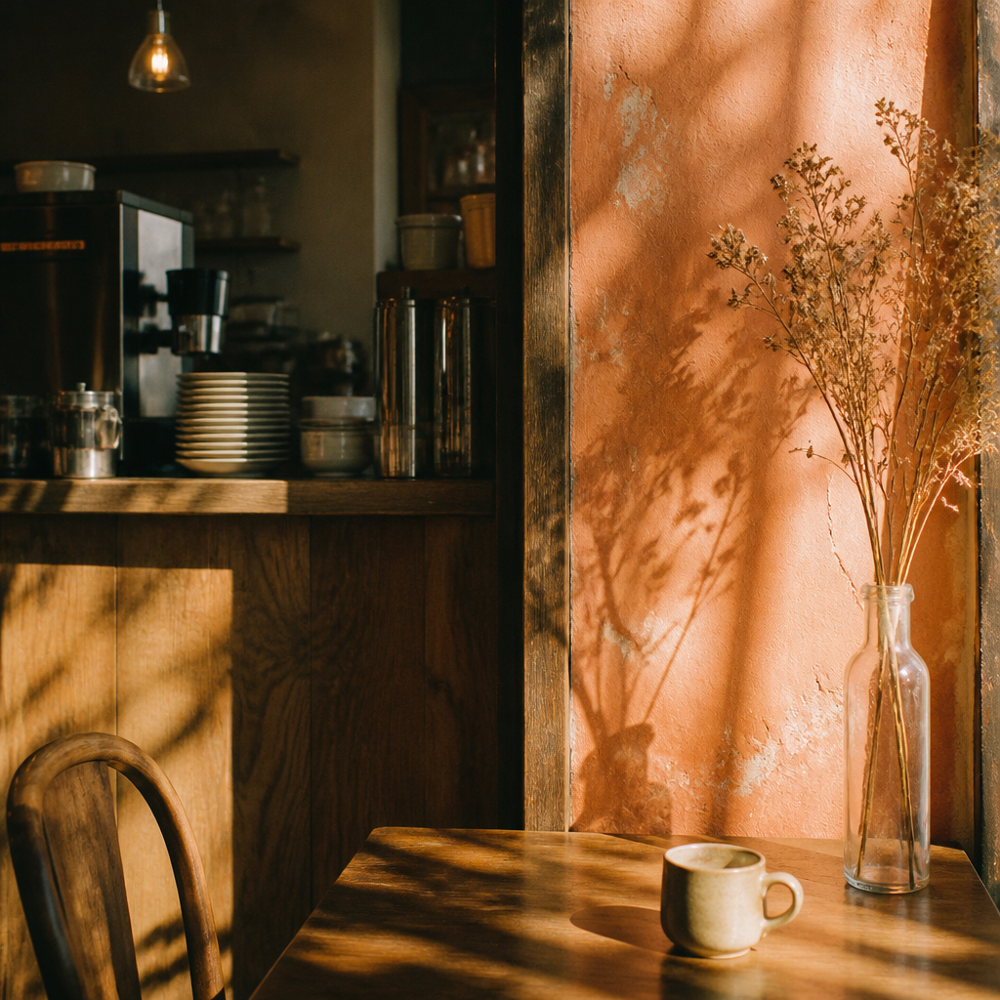
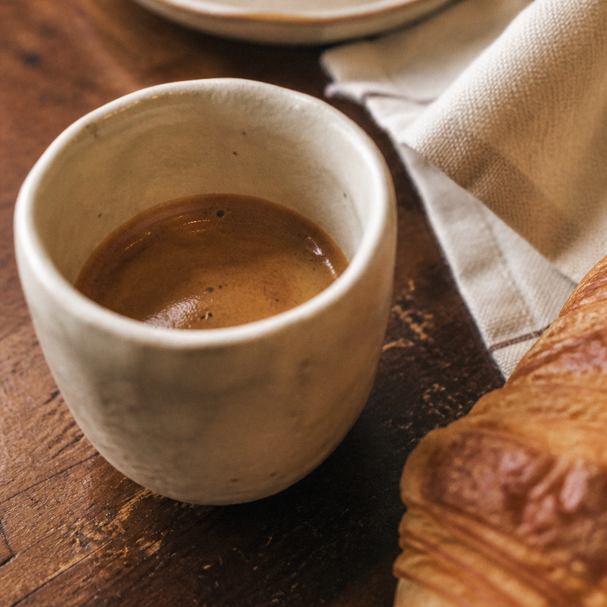

01 / SINGLE ORIGINMedium roast
Huila, Colombia
Sunday Best
Red plum · cocoa · honey
A small, sunny coffee shop on Orchard Street. We make thoughtful cups, flaky things, and room for one more.

We believe the best things are simple, shared, and made with care.
Small-batch, season-led, and always changing a little. Everything here is lovely as espresso or brewed slow.
Red plum · cocoa · honey
Peach · bergamot · jasmine
Dark chocolate · walnut · fig
Milk chocolate · almond · pear
Not sure where to start? Tell us what you like. We love making recommendations almost as much as making coffee.
Ask us at the bar
A warm cup.
A very good morning.
In 2018, our founder Mae found a tiny storefront, a secondhand espresso machine, and a neighborhood that was ready for a place to linger. The first thing she bought was a grinder. The second was a bigger table.
These days, we still believe in good ingredients, kind hellos, and knowing your usual. We work with people who care about where their coffee comes from, then roast it just a few blocks away.
Come meet the crewWe're on Orchard, just where the trees make a little shade. Look for the red door and follow the smell of something good.